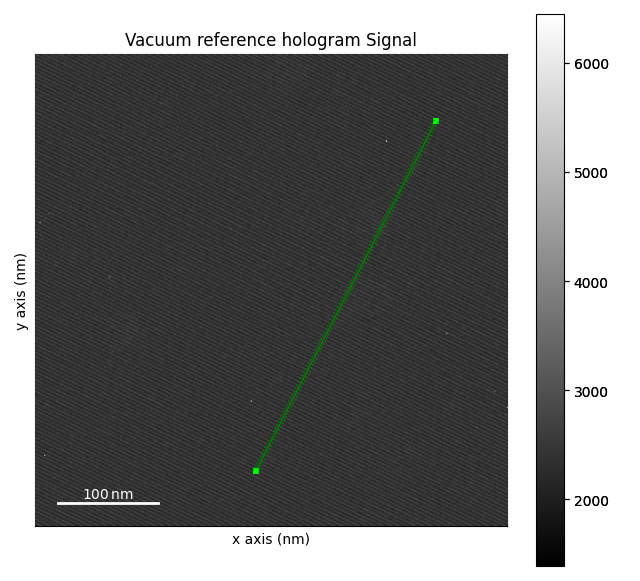
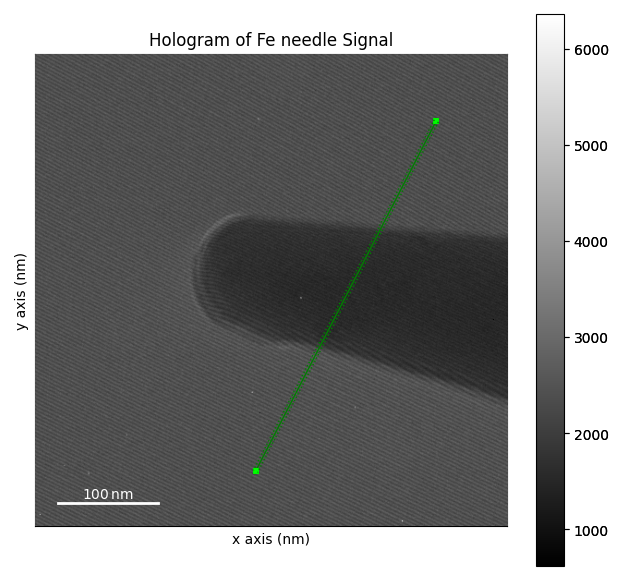

Note
Go to the end to download the full example code.
Extract line profile from image interactively#
Interactively extract a line profile (with a certain width) from an image using
Line2DROI. Use plot_spectra() to plot several
line profiles on the same figure. Save a profile data as msa file.

Extracting line profiles and interactive plotting.#
Initialize image data as HyperSpy signal:
import hyperspy.api as hs
import holospy as holo
im0 = holo.data.Fe_needle_reference_hologram()
im1 = holo.data.Fe_needle_hologram()
Intialize Line-ROI from position (400,250) to position (220,600) of width 5 in calibrated axes units (in the current example equal to the image pixels):
line_roi = hs.roi.Line2DROI(400, 250, 220, 600, 5)
Extract data along the ROI as new signal by “slicing” the signal and plot the profile:
profile = line_roi(im0)
profile.plot()
Slicing of the signal is not interactive. If you want to modify the line along which the profile is extracted, you can plot the image and display the ROI interactively (creates a new signal object). You can even display the same ROI on a second image to make sure that a profile is well placed on both images:
im0.plot()
profile1 = line_roi.interactive(im0, color='green')
im1.plot()
profile2 = line_roi.interactive(im1, color='green')
- 
- 
You can then drag and drop the ends of the ROI to adjust the placement.
If you want to later update the ROI initialization with the modified parameters, you can print these:
print(tuple(line_roi))
(400.0, 250.0, 220.0, 600.0, 5.0)
You can now directly access the data of the profile objects, e.g. to plot both profiles in a single plot:
hs.plot.plot_spectra([profile1, profile2])
# Choose the fourth figure as gallery thumbnail:
# sphinx_gallery_thumbnail_number = 4
<Axes: xlabel='<undefined> (nm)', ylabel='Intensity'>
Since the profile is a signal object, you can use any other functionality provided by hyperspy, e.g. to save a profile as .msa text file:
profile1.save('extracted-line-profile.msa', format='XY', overwrite=True)
Total running time of the script: (0 minutes 4.118 seconds)